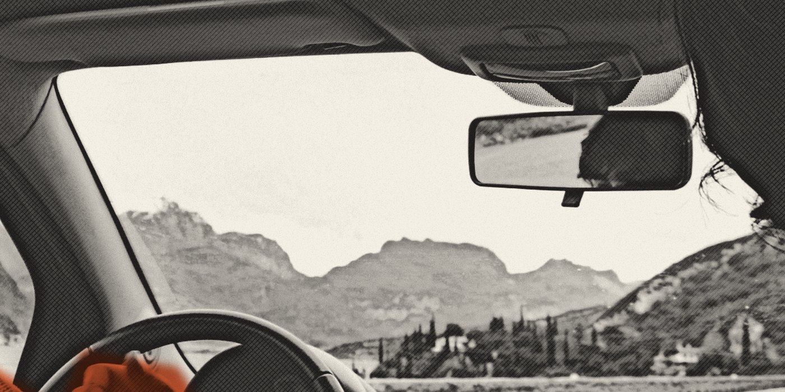

‘No one is going to believe what the fuck happened tonight,’ I said to BigBossMan. Fortunately, we have this canvas to tell a story that seems mythical, if not surreal.
I started my day knowing that I had to go to Soshanguve for a maintenance matter. Given the distance from Brakpan to Pretoria, I needed to wake up and start my journey as early as possible.
Ever since the Ferrari died, I have been a foot soldier. That day, I requested a Bolt to Boksburg, where the client and I would catch taxis from Boksburg to Germiston and from Germiston to Pretoria. My Bolt driver was in a jovial mood that morning. We primarily discussed something that had been bugging me lately: the marriage of two individuals I considered to be my friends. They both looked happy, and I am eternally pleased for them; I just had to process not being informed. Sometimes, you are left to realise where you now stand with certain people.
‘Congratulations on finding a person who loves you. Personally knowing both of you and what you stand for has me in constant support of your marriage. I wish you the very best with your life together,’ is what I would probably have said.
Marriage and children are still no-go zones for me; I just feel that signing a long-term agreement like that requires a lot of resources, resources which I am in the process of receiving, should the universe love me in this lifetime. I also carry the mantra that just because something is possible does not mean that it should be done. I cannot tell you whether I would make a good husband or father. And there are a lot of things that I owe myself that I would rather have than be a father or husband.
It was a very warm morning that day; I just knew that Pretoria would be scorching, and I would be there fully suited in my emerald Italian-style suit and the black gown of justice. My client, on the other hand, was dressed casually: jeans, a short-sleeved shirt and a white cap. My body began to flare the closer we got to Pretoria – not that I cared. When I have things to do, I focus on, and stress about, my tasks before any pleasure. Pretoria and its bevy of gorgeous huns just had to wait until I finished at court. It has that effect, Pretoria: I always find myself fawning over what life would be like if I returned there, but with a war chest for enjoyment.
Moving around Pretoria is one of my favourite things about that city. The trade-off is excessive heat, but you can move about at a slower pace; you can relive your glory days at some of the best student joints (Hatfield) and see some of the most beautiful women on every street.
Once we got to the city, we called a Bolt to drop us off at court. My SePedi is modest and my SiPitori is worse. My client is a native SePedi speaker, which allowed him to engage the driver efficiently in conversation as I focused my attention on the task at court. The conversation between the two was lively but the topic rather despondent, from what I could deduce, as the grey Suzuki bolted towards court.
‘Uncle, I used to date this old sugar momma from Centurion,’ said the driver to the client. ‘She always bought me stuff, and I used to smash her well.’
‘That’s good,’ responded my client. ‘So, what happened?’
‘You know women. You can never confirm them. But I think she went back to her husband.’
After a while, it came to my attention that the conversation had changed topic. The driver expressed his fear and respect for ‘LeShweshwe’ – those being Sotho men, especially those who are Zama Zamas (illegal and artisanal miners).
‘LeShweshwe killed my father in front of our gate. I was shocked. Imagine all of that for only R60 000. But they got them.’
My aloof thoughts came back to reality once we made out that there was a national roadblock before the street that leads to court. The long-distance travel also made us reliant on how our transport would arrive and depart for our destination, so to be stopped further was frustratingly unfortunate.
We were pulled over. The driver calmly assembled his documentation and subsequently exited his vehicle to talk to the officer who had pulled us over. At that point, I needed a distraction, and the funniest thing happened. First, we picked up that the officers spoke IsiZulu fluently instead of SiPitori, which is highly unlikely in Soshanguve.
Our country is a movie. As I looked around, I spotted that these traffic officers were trainees and were probably doing practicals to become future cold-drink drinkers. The jackets they wore said as much. But instead of ‘learners’, they read ‘leaners’; what a way to fuck up a government tender. I wanted to take a picture of one jacket, but engaging any officer there would have created more issues than I was ready for at that particular moment.
Having sat in the vehicle the entire time, I cannot tell you under which circumstances the driver was released. All that I do know is that we soon found ourselves covering the final distance to the court.
Soshanguve Magistrates’ Court has a unique location. It sits at the very end of the R80, in fact at the very entrance. It is newly built, which is a generous way of saying how allowing it tends to be in relation to work volume.
We signed in at the entrance, making our way to the courtyard. It being for an inquiry, I was prepared to spend a great deal of my day arguing for a favourable order for my client, who had expressed how draining this entire process had been for his daughter.
For the duration of the case, the client’s ex-wife had decided to represent herself. This created an unfair position in which my qualifications and experience could overwhelm her, as well as frustrate the conclusion on account of her not being well-versed in the legal system. The latter came through. The inquiry failed to proceed as she forgot to prepare the court file procedurally for the magistrate. As a compromise, and seeing her chagrin, we agreed to settle the matter.
Divorce and maintenance cases – despite the many years that I have worked on them – are always funny. It’s one of those situations of nature that people can, on one day, be so in love, to the extent of creating life, only to become sworn enemies. Usually this is lopsided in favour of women, which is why I take great pride in representing ex-husbands and present fathers. Cases like these are great examples of why I chose this profession: to be able to make a difference.
Leaving the courthouse then presented an opportunity to remove the black gown of justice; it was just too hot. I was already making plans for when I returned home. I wanted to get food, spend time with my lady, and spark the Do-Si-Dos. If you are an avid Sub Culture reader, you’ll recall the article we published about twelve mystery strains that we were looking forward to smoking. Oddly enough, our list featured Do-Si-Dos, Ice Cream Cake and Pink Panties, all of which we smoked shortly after the publication of that article on the Sub Culture website.
Relaxation, sleepiness and tingliness are the top effects of consuming Do-Si-Dos; the conclusion of my matter left me yearning for a relaxed, sleepful and tingly evening with my woman, dinner and a session.
When I got home, I decided to stretch my legs and head to the supermarket in search of snacks for movie night.
‘Hey, G!’ I heard a familiar voice.
Two lanes from my queue stood BigBossMan. A towering individual, he stood hunched over his trolley. He called me over, and I changed my lane to his. We exchanged pleasantries.
‘Yeah, dawg, I’m going to fetch my kids. Look, I got them some snacks for school lunch,’ he said. His trolley was full of yoghurts, juice and bread, among other things; it confirmed what he was saying.
I’d only known him for a couple of months. His age and mannerisms came across as those of someone who has been humbled by age, someone who is focused on building family and business. Whether or not I am humbled by time myself, I am able to have gainful conversations with him. We also share a knack for courting pesos (esteemed women). Earlier in the year, BigBossMan stated that he was mourning the loss of the mother of his children. Ever since that day, I have come to revere how he addressed his loss.
‘Let’s go pick up my kids if you’re game, dawg? We’re going to be back soon,’ he said.
One of my defining characteristics is spontaneity and a love of road trips.
‘Alright, bet. Let’s go,’ I responded. Perhaps I was not as tired after all, I thought.
I told him that I was down to haak (go). All I had to do, I told him, was drop off the snacks with my hun and grab a pre-roll of the Do-Si-Dos, to which he acquiesced. We finished our shopping and went to a local roadhouse, where he collected pizzas he had bought along with his groceries.
A crucial reason why I elected to move with BigBossMan was that he also appreciates quality marijuana, which would make our trip trippy.
After a morning that required waking up early and travelling by taxi and Bolt, it was metaphorical to spend my night sat shotgun in a private car. The car itself, a 2006 emerald Toyota Yaris, was a determined and well-aged car. I helped myself to the car’s Bluetooth connectivity feature and played some Westside Gunn, jamming to his iconic sound and greatness.

It soon got very dark outside; the black sky hosted grating mosquitoes and sinister bats. Either way, I pulled out the joint and began hotboxing in the car, which was dashing towards a destination whose distance I didn’t know until we got there. The yellow lights of the Yaris pierced through the darkness as Brakpan started falling behind and we approached Tsakane and Heidelberg. At this point, BigBossMan, suspiciously already high, began to get louder, pointing out a distant house, somewhere among the orange objects that were the various houses in Tsakane, where one of his girlfriends lived.
‘Have we come to Tsakane to collect your kids?’ I asked him, assuming that this was what he meant by us coming back soon.
‘We haven’t even covered 5% of the distance to where my baby momma is from. I want you to understand just how far I was travelling for pussy.’
At this point, I started to pay more attention to the road signs, just to figure out where I had agreed to go. In Heidelberg, I made out three destinations: Standerton in Mpumalanga, Ratanda (which we eventually passed) and Deneysville in the Free State. It had been years since I had gone on benders in the Free State. My last time in the Free State was in 2019, at Goble Park in Bethlehem, where I went with Mamelodi Sundowns fans from Pretoria, where I was living, to play and win the 2018/19 PSL championship against Free State Stars.
As the Yaris sprinted towards the Gauteng–Free State border, the last frontier of civilisation, Heidelberg, now a long distance behind, the radio switched off. We did not think too much about it except for irritation. Now, the road was starting to get darker.
‘Shit, bro. This weed of yours is potent,’ BigBossMan complimented the joint.
Blam! went the car. We hit a pothole, and the car got worse.
I suggested stopping and waiting for help, but BigBossMan rightly advised that where we were was not an ideal place to stop. The reason the road had become darker became clear as we realised that the lights had gone dim due to a lack of power and that eventually the engine would be next, which is exactly what happened.
Soon thereafter, the engine died. Whether through divine intervention or pure luck, we were stopped on an incline. We got out, allowed the car to roll down, skilfully kickstarted it and turned back for home, as it had become a mutual decision. I was somewhat downbeat because I had become married to the idea of crossing into the Free State, even momentarily. Despite not making it to the desired destination, I could agree that BigBossMan trekked a great distance, all in the name of love. Although I did not have the pleasure of meeting his now-deceased baby momma, I can confidently vouch for BigBossMan as a decent widower and better father.
The drive back home was distressing. To its credit, the Yaris could move. There it was, moving forward at an unknown speed because the speedometer was flat. I suggest that it was moving at no more than 20 km/h, choking at our attempts to increase the speed. Getting back to Heidelberg as soon as possible would be pivotal.
On the way to Heidelberg, BigBossMan, who was familiar with the area and had family staying in Ratanda and Heidelberg, called some of his siblings to see who could help us. Unfortunately, every attempt failed. On the brighter side, he remembered having two fresh car batteries at his home, back in Brakpan. All we now had to do was find a petrol station in Heidelberg and request that the package be delivered via Bolt Send.
Our efforts landed us close to a four-way stop where a Sasol petrol station stood. We were highly appreciative that the Yaris died where it died; at the same time, it was torturous, as where we stopped was an incline which we had to climb. When we pushed together, the car obeyed and moved in the direction of, and in reaction to, our climbing position. Every time we used our greatest might to overcome the incline, we would roll back further to where we had started pushing.
Next to where we stopped, there was a row of trees that hid the main road that we were on from the adjacent streets, where the residential houses and local tuckshops had their fronts facing said main road. I spotted him. As we kept failing in our efforts, I heard the rustling of leaves as the shadow of a petite man holding a box approached us.
‘Brothers, can I help you push?’ he asked us.
With no hesitation, we agreed. He put his box on the ground by the side of the road and helped us push. His presence made a significant difference. We eventually found ourselves in the middle of traffic. Being within traffic, we did not have to explain that we were pushing a dead car. Our duty was to expeditiously push the car to the petrol station.
Because of his role with the car, custom dictates a token, often a monetary gift, as a sign of thanks. BigBossMan went into the shop to get something for our new friend. Themba, his name, told me that he was from Newcastle in KwaZulu-Natal. He was soft-spoken and made you question how he ended up fiending on the streets.
‘And at home my sisters hate me. It’s like they are ashamed of me, and they keep me at a distance,’ he said in IsiZulu.
Not being the best at listening to and answering other people’s problems, I found myself impatiently rushing BigBossMan to come out with airtime in order to request the Bolt package. He called his sister in Brakpan, who was instructed to go to the shed and give the batteries to the Bolt driver who would be arriving soon at their house.
BigBossMan told Themba that the ATM inside was not working and asked what he could purchase for him instead. Surprisingly, Themba asked only for two litres of milk; he already had his pap. We respected that from Themba: he was honest, and his primary focus lay with food instead of drugs. Encounters like this are the ones that inform us that people have their own sub culture, which governs how they survive, function and draw happiness from their direct environments.
Themba withdrew from the petrol station. BigBossMan and I found ourselves sitting in the car for about 45 minutes; that’s how long it was going to take for the batteries to be delivered to our location. I found myself deep in thought, surprised at how my day had gone. At that moment, I longed for my bed; I longed to get home, cuddle with my hun and eat a savoury meal. All of this not being possible immediately resigned BigBossMan to sleep and me to watching some videos on my phone and tracking the whereabouts and estimated time of arrival of the batteries. Once again, I understood how far BigBossMan used to travel for pussy, and now travels for his children.
The Bolt eventually arrived, and the Yaris sprang to life. We agreed that the new battery would also not last forever because our quick diagnosis had found a fault with some wiring that was depleting the battery. Accordingly, we headed for home with only the engine and headlights on; anything else was undesirable.
‘What a day,’ said I.
BigBossMan turned his pudgy face in my direction and responded, ‘Yeah, dawg. Maybe we can go back tomorrow?’ to which I agreed. ‘And this weed of yours, dawg. Shit, it is so powerful; I couldn’t be angry when my car started with its problems.’
‘You were mellow?’ I asked.
‘Over, my dawg. Shit, bra, oh my God! This is one of the best strains that I’ve smoked. I can see that you like the last number stuff.’
I reflected on this and came to the conclusion that BigBossMan had arrived at hours ago: the particular Do-Si-Dos that we had that night was top-tier. As a result of the sedation that we got from that particular joint, we were simply too high to panic. To exaggerate a lot, I’d say that we were in a different dimension. It would not be until the very next day that we would appreciate the adventure that was yesterday.